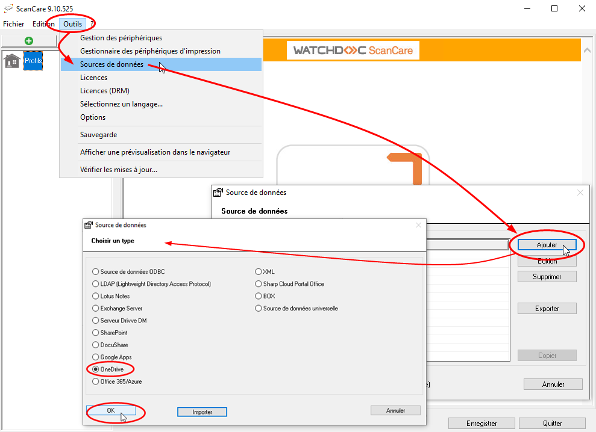
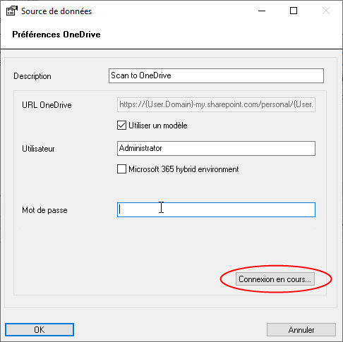
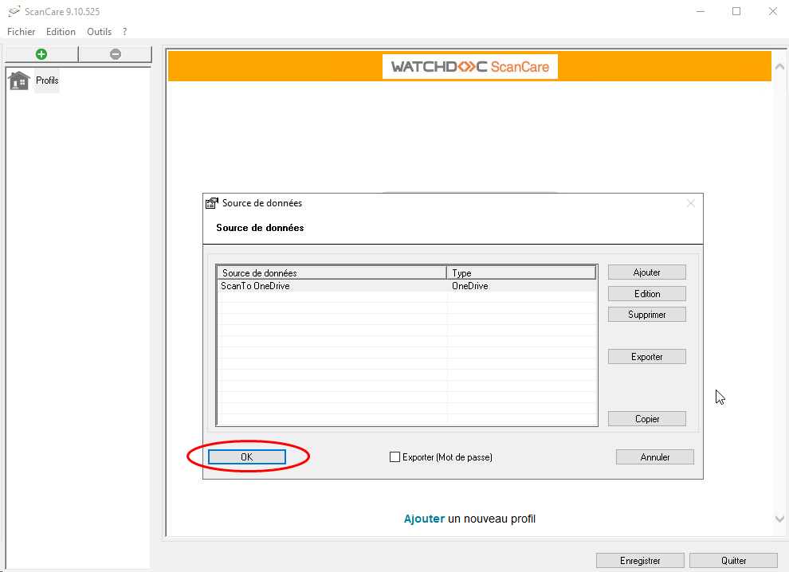
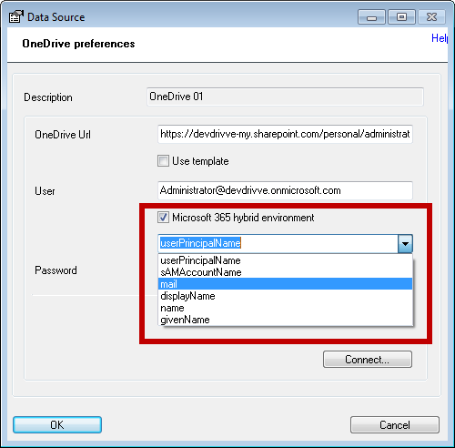
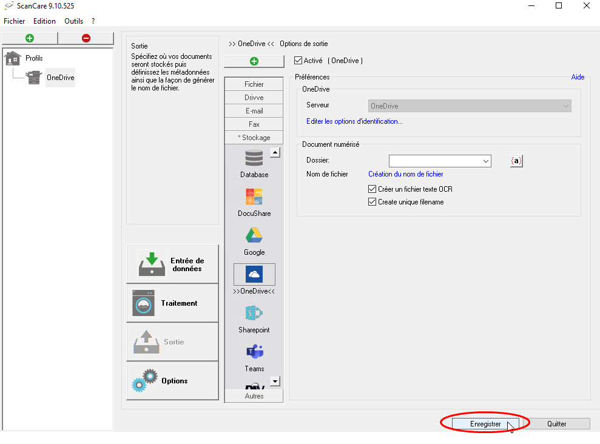
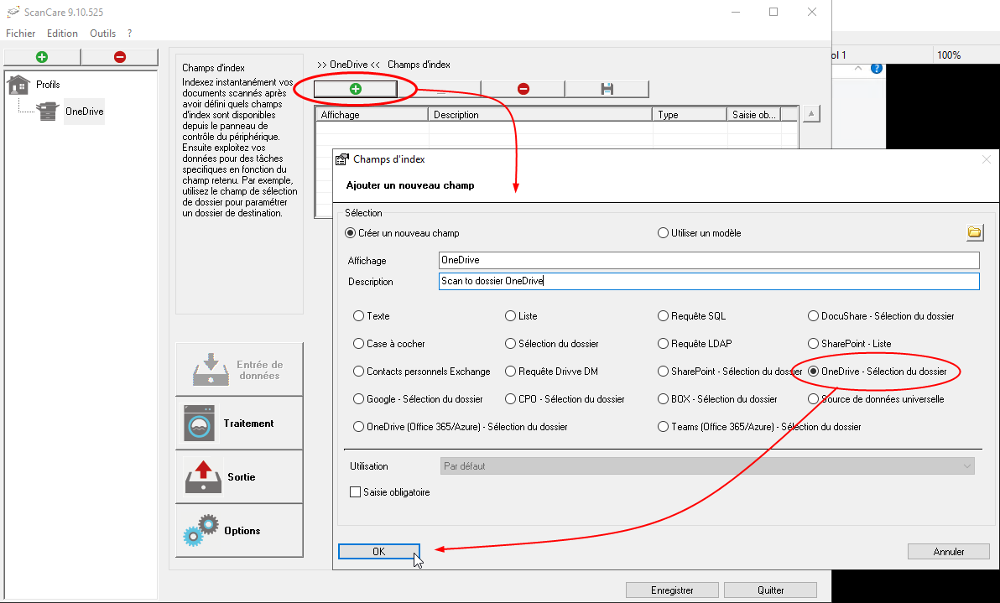
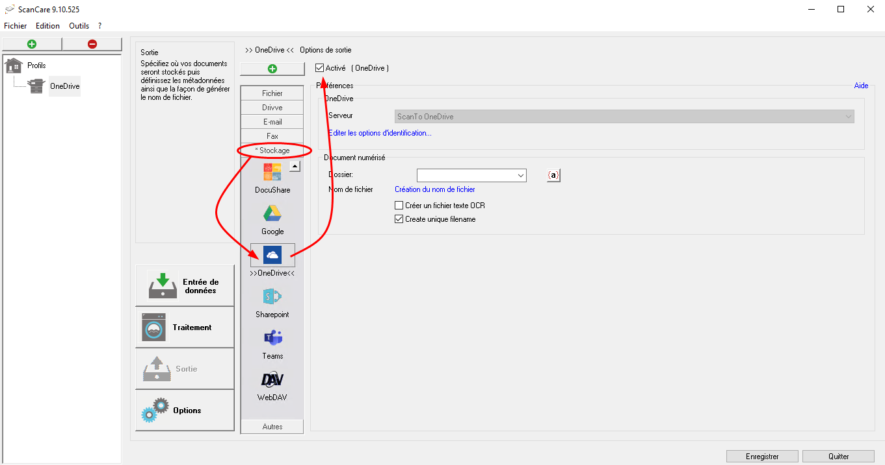

Watchdoc ScanCare - Configurer une sortie vers Microsoft® OneDrive
Présentation
Watchdoc ScanCare vous permet d'envoyer les documents numérisés vers les espaces Microsoft OneDrive des utilisateurs.
Procédure
Prérequis
Pour configurer la sortie Microsoft OneDrive, vous devez disposer :
-
d'une version de ScanCare égale ou supérieure à v6.1
-
d'une licence ScanCare Version 6.1: Exchange / Fax Connector (UEC)
-
d'une licence ScanCare Version 7.0: Cloud Connector (CCM) Module
-
d'un compte Microsoft Office 365 Business
-
Pour les paramètres d'authentification Préférer les informations d'identification des utilisateurs connectés et Utiliser les informations d'identification des utilisateurs connectés, les conditions suivantes doivent être remplies :
-
le nom Active Directory de l'utilisateur (la partie jusqu'au signe @ du nom d'utilisateur) et du compte d'utilisateur OneDrive doivent être identiques ;
-
le mot de passe de l'utilisateur Active Directory et celui du compte utilisateur OneDrive doivent être identiques.
-
N.B. : ScanCare prend en charge la numérisation dans la bibliothèque OneDrive Documents. Cette bibliothèque est la bibliothèque par défaut de chaque site OneDrive personnel.
Créer la sortie OneDrive
Avant de créer un profil ScanCare pour numériser des documents puis les envoyer vers Microsoft OneDrive, vous devez créer une Sortie (source de données) :
-
accédez à l'interface de configuration de ScanCare en tant qu'administrateur ;
-
dans le menu Outils, cliquez sur Sources de données ;
-
cliquez sur le bouton Ajouter (Add) ;
-
Dans la liste, sélectionnez le type OneDrive puis cliquez sur OK :

-
Dans l'interface Source de données, dans le champ Description, attribuez un Nom à la source de données :
-
Pour le paramètre URL OneDrive, choisissez l'une des deux options :
-
si votre nom d'utilisateur OneDrive contient votre propre domaine, saisissez l'url dans le champ : par exemple :
https://{Domaine.utilisateur}-mon.sharepoint.com/personnel/{Nom.utilisateur}_{Domaine.utilisateur}_onmicrosoft_com
N.B. : le domaine du site et le domaine de l'utilisateur peuvent être différents ; l'URL ne doit pas se terminer par l'expression /documents. -
si votre nom d'utilisateur OneDrive ne contient pas votre propre domaine.cochez la case Use template. Dans ce cas, un modèle d'URL est utilisé. L'URL, dont la syntaxe est la suivante, est résolue automatiquement : https://{Domaine.utilisateur}-mon.sharepoint.com/personal/{Nom.utilisateur}_{Domaine.utilisateur}_onmicrosoft_com
-
-
Saisissez le Nom complet et le mot de passe.
N.B. : le nom complet doit respecter la syntaxe suivante : [nom d'utilisateur]@[domaine].onmicrosoft.com. -
Cochez la case Microsoft 365 hybrid environment si votre environnement est de cette nature (installation dans le cloud et sur site (on-premises)).
-
Puis cliquez sur le bouton Connexion en cours :

-
si ScanCare parvient à établir la connexion, cliquez sur OK lorsque le message de connexion s'affiche ;
-
Cliquez de nouveau sur OK dans l'interface Préférences OneDrive > Source de données :

-
si ScanCare ne parvient pas à établir la connexion, cliquez sur OK lorsque le message s'affiche, puis vérifiez les paramètres saisis à l'étape précédente.
N.B : il arrive que ScanCare ne trouve pas le nom d'utilisateur One Drive parce qu'il n'est pas identique au nom d'utilisateur fourni par Windows. Dans ce cas, procédez comme suit :
-
cochez la case Environnement hybride Microsoft 365 ;
-
dans la liste déroulante, sélectionnez ou saisissez le champ Active Directory à partir duquel le nom d'utilisateur OneDrive est extrait :

-
-
Vous pouvez ensuite créer un profil permettant de numériser des documents à envoyer vers OneDrive.
Créer un profil OneDrive
-
Dans l'interface de configuration de ScanCare, cliquez sur l'entrée de menu Profils, puis cliquez sur le bouton Ajouter un profil ;
-
dans l'interface Ajouter un nouveau profil, saisissez :
-
un Nom
-
sélectionnez le type de profil "Scanner" ;
-
-
cliquez sur OK pour ajouter le nouveau profil :

-
Dans l'interface Champs d'index, cliquez sur le bouton Ajouter.
-
Dans l'interface Ajouter un nouveau champ, complétez les champs suivants :
-
Affichage saisissez un nom pour le nouveau champ d'index ;
-
dans la liste, sélectionnez le type OneDrive - Sélection du dossier ;
-
-
cliquez sur le bouton OK pour ajouter le profil :

èLe profil OneDrive s'affiche alors dans la liste des champs d'index.
-
S'il n'y a qu'une seule source de données OneDrive, cette source de données est automatiquement sélectionnée dans le champ Connexion.
-
S'il existe plusieurs sources de données OneDrive, vous pouvez sélectionner l'une d'entre elles dans la liste déroulante.
-
-
Une fois le profil OneDrive créé, cliquez sur la section Sortie.
-
Dans l'interface Options de sortie, cliquez sur l'entrée de menu Stockage.
-
Dans la liste des types de stockages, sélectionnez OneDrive et cochez la case Activer :

-
Configurez les paramètres requis pour la sortie :
-
Serveur : la source de données One Drive utilisée est affichée.
N.B. : si vous n'avez pas ajouté d'index dans la section Source et que vous disposez de plusieurs sources de données One Drive, sélectionnez-en une dans la liste des sources disponibles. -
Options d'identification : cliquez sur le lien Modifier les options d'identification pour configurer l'identification
-
soit à l'aide du compte par défaut saisi dans ScanCare.
N.B. : si vous cochez la case Préférer les utilisateurs identifiés et référencés, si un utilisateur est connecté au périphérique, ses droits sont utilisés au lieu des droits du compte d'utilisateur défini dans la source de données ;
-
pour l'authentification, seuls le nom d'utilisateur et le mot de passe de l'utilisateur connecté au périphérique sont utilisés.
-
-
Dossier : dans ce champ, sélectionnez l'endroit où seront enregistrés les documents numérisés.
-
Nom de fichier : cliquez sur le lien Génération du nom de fichier pour ouvrir la boîte de dialogue qui permet de déterminer le nom du fichier à l'aide de fonctions et de variables (cf. Utiliser les fonctions et les variables).
-
Créer un fichier de texte OCR : cochez cette option pour activer la fonction OCR permettant de créer un fichier numérisé de type texte interrogeable ;
-
Créez un nom de fichier unique : cochez cette option pour vous assurer que le nom de fichier de chaque document numérisé est unique. En cas de noms de fichiers identiquesScanCare ajoute un numéro séquentiel au nom du fichier (rapport_1, rapport_2, etc.).
-
-
Cliquez sur Enregistrer une fois le profil configuré :